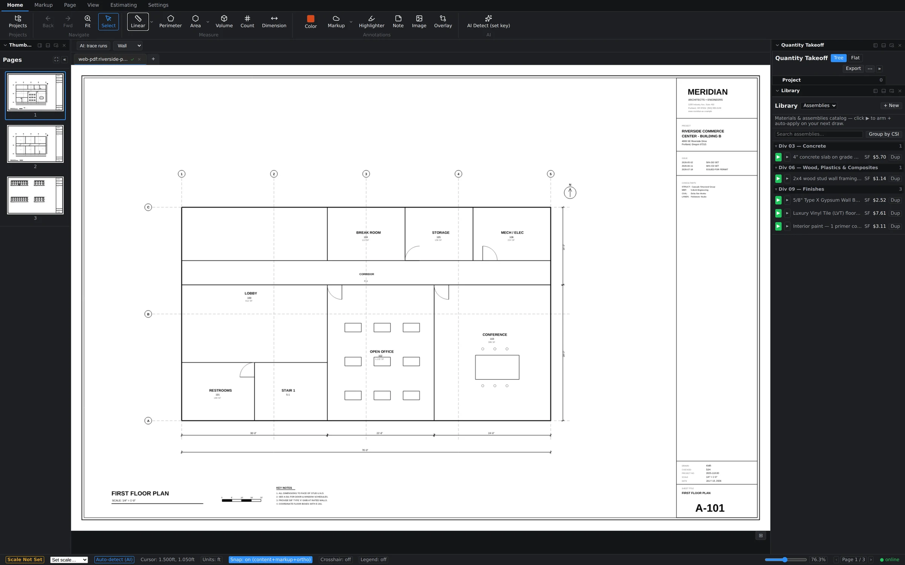
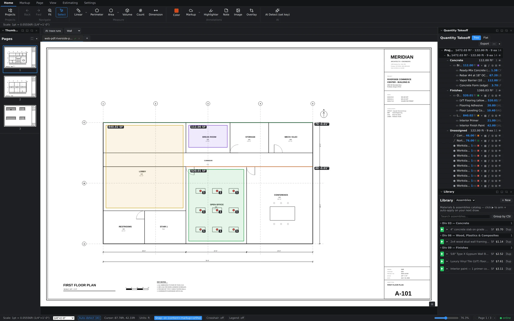

Scale is per page — and that matters
Real plan sets mix scales constantly: floor plans at 1/4" = 1'-0", details at 1" = 1'-0", elevations and site plans at something else again. Groundwork Takeoff stores calibration per page, so each sheet carries its own scale and your quantities stay correct as you move through the set. Set a scale on page 1 and it does not silently apply to page 7 — each page earns its own.
The amber "Scale Not Set" badge
When the current page has no calibration, the status bar shows an amber Scale Not Set badge beside the Set scale… dropdown. Treat it like a stop sign: measurements need a calibrated page before their numbers mean anything. Notice the cursor readout too — before calibration it reports paper units; after calibration it switches to real-world feet, which is your quickest confirmation that the page is live.

Two ways to set it
- Pick the stated scale. Open Set scale… in the status bar and choose the scale printed in the title block — 1/4" = 1'-0" and the other standard architectural and engineering scales are right there. Fastest when you trust the drawing.
- Calibrate against a known dimension. Use the calibrate option, click two points spanning something with a printed dimension — a dimensioned wall, a grid bay — and enter the true distance. Groundwork computes the scale from your clicks. This is the safe route for scanned sheets, half-size prints, or any PDF that's been resized on its way to you.
Either way, the status bar then shows the resolved scale label for the page (for example, 1pt = 0.05556ft (1/4" = 1'-0")), and the amber badge disappears.

What happens on uncalibrated pages
Pages you haven't calibrated keep showing the amber badge — you'll see it, for instance, when you flip from a calibrated floor plan to an elevations sheet you haven't touched yet. The badge is per page, so a calibrated page 1 and an uncalibrated page 3 can coexist without confusing each other. Calibrate each page the first time you need to measure on it.
Recalibrating a page
If you discover a page was calibrated wrong, just set it again. Existing measurements on that page recompute to the corrected scale — you don't have to redraw anything. That's the point of keeping scale as live data instead of baking it into each measurement.